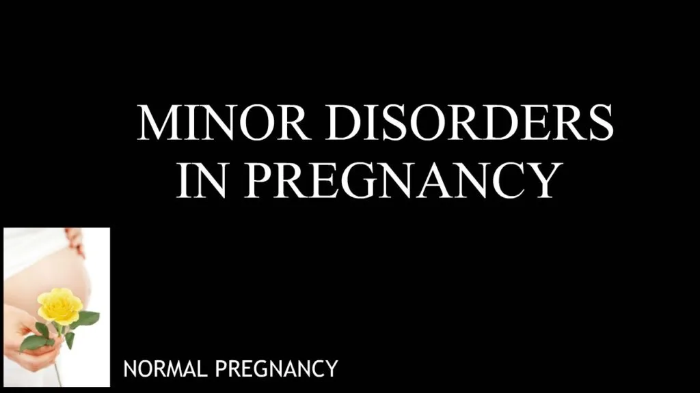

Expanded Nursing Uganda Explanation
Minor disorders should be reviewed through safe maternal and newborn assessment, early recognition of danger signs, respectful communication and timely referral. Connect the definition to vital signs, bleeding, fetal or newborn wellbeing, patient education and local protocol requirements.
01 Physiology of Puerperium
The term “involution” is used to refer to the regressive changes taking place in all of the organs and structures of the reproductive tract.
During this stage, a number of physiological changes take place.
- The reproductive organs return to the non-gravid state
- lactation is established, and all other physiological changes that occurred during pregnancy are reversed.
- The foundations of the relationship between the infant and the parents are laid, and the mother recovers from the stress of pregnancy and delivery, taking on the responsibility for the infant’s care.
- The posterior pituitary gland secretes oxytocin, which stimulates uterine contractions and aids in the expulsion of the placenta during the third stage of labor.
- Oxytocin also acts on the breast tissue, facilitating milk production when the baby suckles.
- Hormones such as HCG, HPL, estrogen, and progesterone, which were increased during pregnancy, gradually decrease to their normal levels.
Uterus
Involution of the uterus; The uterus tries to go back to its original size, position and situation as in a pre-gravid state.
At the end of labour, the uterus weighs approximately 900g and goes back at the end of puerperium to 60g representing a reduction of 16 times the weight.
Size ; The uterus is about 12.5-15 cm above the symphysis pubis. It goes back eventually by1.25 cm daily. A week later, the fundus is 7.5cm above the symphysis pubis. 10-12 days later, the uterus will not be palpable. The size of the uterus soon after labour is 15x12x’8 to 10’cm in length, width and thickness and by the end of puerperium, it will be 7.5x5x2.5cm.
Shape ; When the placenta has been expelled, the uterus contracts and retracts to become globular in shape.
As involution takes place, the cavity becomes small and 6 weeks following delivery, the uterus returns to its normal shape. The decidua continues to shed up to the basal layer and a new endometrium forms.
This undergoes four processes, namely;-
Autolysis
The proteolytic enzymes digest muscle fibres which had increased during pregnancy to 10 times their normal length and5 times their normal thickness.
Phagocytosis
The end products of autolysis are removed by phagocytic action of the polymorphs and macrophages in the blood and lymphatic system and are excreted by the kidneys.
Ischemia
This results in compression of the blood vessels and there is reduction in the uterine blood supply producing a relative state of ischemia. The site is gradually covered by glandular tissue then by endometrium.
Contraction and retraction of uterine muscles under the influence of oxytocin.
Other factors
- Breast feeding.
During breast feeding, the posterior pituitary gland produces oxytocin which assists in the involution of the uterus.
- Exercises(ambulation)
- Continuous draining of the bladder.
Progression of changes in the uterus after delivery
- Period Weight of uterus Diameter of placental site Cervix
- End of labour 900g 12.5cm Soft and flabby
- End of 1 week 450g 7.5cm 2cm
- End of 2 weeks 200g 5.0cm 1cm
- End of 6 weeks 60g 2.5cm A slit
Vulva
The labia majora and minora become flabby and are less segmented due to decreased vascularity.
Cervix
After delivery, the cervix may be seen protruding into the vagina but is soft and vascular.
It loses its vascularity rapidly and it normally regains its shape within 2-3 days after delivery.
A finger can still be passed through the cervical canal up to 1 week following delivery. The external os closes eventually leaving a transverse slit which is large enough to admit a finger known as a multiparous os.
Lochia
It’s a term used to describe the discharges from the uterus during puerperium. Its alkaline in reaction and so it favors rapid growth of micro- organisms as compared to acidic vaginal secretion.
The amount varies in different women. It’s heavy but not offensive and non- irritant.
Lochia under goes sequential special changes as involution takes place.
Red lochia (lochia rubra)
It’s red in colour and consists of blood from the placental site and debris arising from the decidua and chorion.
It’s the 1 st lochia that starts immediately after delivery and continues for the 1 st 3-4 days postpartum.
Serous lochia( Lochia serosa)
It’s the next lochia. Its paler than lochia rubra and is serous and pink.
It contains fewer RBCs but more leucocytes, wound exudates, Decidual tissue and mucus from the cervix.
It lasts for 5-9 days.
White lochia(lochia alba)
It is the last lochia. It is pale, creamy white-brown in colour. It consists of leukocytes, Decidual cells, mucus and debris from healing tissue. It lasts up to 15 days.
Some evidence of blood may continue for 2-3 weeks. A slight increase in the amount of lochia may be seen when a mother is active and during breast feeding. The average lochia discharge for the 1 st 5-6 days is estimated to be approximately 250ml.
Vagina
Immediately after delivery, the vagina may remain quite stretched and may have some degree of oedema and gapes open at the introitus. In a day or more it regains its tone and gaping reduces.
It is smooth walled rather than usual and elastic. By the 3 rd week postpartum, the vaginal rugae return and it reduces in size. It will always be a little larger than it was before the birth of the 1 st child. The torn hymen heals by a scar formation leaving several tissue tags called carunculae myrtiformes .
Breasts
No further anatomical changes occur in the breast for the 1 st 2 days following delivery.
The secretion from the breast called colostrum starts during pregnancy and becomes more abundant during this period.
The rise in circulating prolactin acts upon the alveoli of the breasts and stimulates milk production in the 1 st 3-4 days and the breasts become heavy and engorged. As the baby sucks, engorgement is reduced.
Respiratory System:
- Breathing returns to normal as the diaphragm and lungs are no longer compressed, as they were during pregnancy.
Urinary System:
- Physiological Diuresis: There is an increase in urinary frequency and volume due to the elimination of retained fluid from pregnancy and labor.
- Bladder Changes: The bladder may be edematous and hypotonic initially, leading to over-distension and incomplete emptying. Proper voiding practices are encouraged to prevent complications.
Circulatory System:
- Heart size returns to normal after the increased cardiac workload during pregnancy.
- Blood volume gradually returns to non-pregnant levels by the second week postpartum.
- Vital Signs: Blood pressure, pulse rate, respiration, and temperature generally return to normal levels within the first 24 hours postpartum.
Digestive System:
- Increased Thirst: Women may experience increased thirst due to fluid losses during labor and postpartum diuresis.
- Constipation: Constipation may be a concern initially due to the lack of muscle tone in the perineal and abdominal areas.
Musculoskeletal System:
- Pelvic joints gradually regain their tone over three months.
- Abdominal walls become flabby but can regain tone with exercises.
02 Disorders of Puerperium and Relief Measures
These are common discomforts that new mothers may experience after childbirth, but there’s no reason for them to suffer unnecessarily.
- Afterbirth pains: Afterbirth pains are the uterus’s sequential contractions and relaxations. They are more common in women with higher parity and those who breastfeed. Management:
- Keep the bladder empty to prevent the uterus from shifting and hindering its contractions.
- Advise the mother to lie in a prone position with a pillow under her lower abdomen.
- Administer analgesics to alleviate pain.
- Excessive perspiration : Excessive sweating occurs as the body eliminates excess interstitial fluid resulting from hormonal changes during pregnancy. Management :
- Ensure the mother stays clean and dry.
- Change gowns and bed sheets regularly.
- Keep the mother well-hydrated by offering fluids frequently.
- Breast engorgement : Breast engorgement is caused by milk accumulation and stasis, increased vascularity, and congestion. It typically occurs around the 3rd day postpartum and lasts for approximately 24-48 hours. Management: Non-breastfeeding:
- Provide good breast support.
- Apply ice bags or packs to relieve pain.
- Use analgesics like PCM or aspirin, if needed, for pain relief.
- Avoid massaging the breasts to express milk.
- Avoid applying heat to the breasts, as it may increase milk flow. Breastfeeding :
- Encourage breast massage, manual expression, and nipple rolling.
- Ensure the baby nurses every 2-3 hours without missing any feeds or using supplements.
- Alternate between both breasts during feedings to ensure complete emptying.
- Apply warmth to the breasts before each feeding to promote milk flow.
- Use proper breast support without creating pressure points.
- Ice bags may be used between feedings to reduce swelling and pain.
- Analgesics can be used if necessary.
- Perineal (stitch) pain : Before providing treatment, examine the perineum to determine whether the pain is normal or if complications like hematoma or infection are present. Management :
- Apply ice packs or bags to reduce discomfort.
- Use topical analgesic spray as directed.
- Take sitz baths 2-3 times a day after defecation and voiding, as the warmth and motion of the water can soothe and promote healing.
- Constipation : Constipation can be caused by increased progesterone levels in late pregnancy, decreased bowel motility, and reduced fluid intake during labor. Management :
- Stool softeners or mild laxatives are usually prescribed for women with 3rd or 4th-degree perineal repair.
- Hemorrhoids : If a woman experiences hemorrhoids, they may be quite painful for a few days. Management :
- Use ice bags or packs.
- Administer analgesics.
- Apply warm water compresses.
- Prescribe stool softeners.
- Consider rectal suppositories and creams, such as sediproct suppositories.
- Replace external hemorrhoids inside the rectum if necessary.
03 POSTNATAL EXAMINATION
The puerperal mother should attend the postnatal clinic for a full examination at 6 weeks after delivery to confirm full recovery from the effects of pregnancy, labour, and delivery.
The nurse should follow an organized method when examining the postpartum client, which provides a consistent, quality approach to nursing care. The acronym BUBBLE-HE can serve as a helpful reminder of the elements in a postpartum assessment. BUBBLE-HE stands for:
Breasts Uterus Bladder Bowel Lochia Episiotomy Homan’s sign Emotional status
Requirements : A VE tray containing;
- A gallipot of sterile swabs
- 2 receivers
- Clean pads
- Sterile gloves
- Sterile bowel of lotion
- Antiseptic lotion in a bowel
- Clean gloves
- Lubricant
- Cusco’s vaginal speculum
- Sim’s speculum
- Sponge holding forceps
- Tape measure.
At the bedside:
- Vital observations tray.
- Acetic acid
- Stationary.
Procedure:
- The mother’s general condition and emotional health are assessed.
- Welcome the mother and the spouse if any.
- Offer the mother a seat.
- Greet the mother.
- Introduce yourself and vice versa.
- Communicate to the mother about the activities done at the clinic and the reason for any procedure.
- Observe for signs of emotional distress or depression and anxiety.
- Take history of pregnancy, labor, and puerperium.
- Present health statuses e.g. sleep, appetite, breastfeeding habits, and reactions.
- Ask how she feels and how she is managing the baby, if breast milk is adequate.
- Ask about any discomforts.
- Ask about the onset of menstruation or any vaginal bleeding or abnormal discharges.
- Give the mother the opportunity to discuss any problems.
- Check and record TPR (temperature, pulse rate, and blood pressure).
- Screen for any health concerns by performing a systematic examination from head to toe.
- Conduct a breast examination, re-examining for signs of infections or lumps, and check for cracks and blisters on the nipples. Instruct the mother on self-breast examination.
- Palpate the uterus and lower abdomen for tenderness to confirm involution of the uterus and note the tone of the abdominal muscles.
Examination is done from head to toe systematically.
Breast examination : The breasts are re-examined for signs of infections, lumps, cracks, and blisters on the nipples. The mother is instructed on self-breast examination.
Uterus : The lower abdomen is palpated for tenderness to confirm involution of the uterus and to note the tone of the abdominal muscles.
Bimanual pelvic examination and speculum vaginal examination:
Speculum examination:
- Follow the general rules for a pelvic examination.
- Ask the mother to empty her bladder.
- Place the mother in a dorsal position.
- Inspect the vulva for any swelling, inflammation, or soreness.
- Examine the urethral opening for inflammation and local discharge.
- Have the mother cough or strain while separating the labia to check for any prolapse of the uterus or stress incontinence with urine leakage.
- If a specimen from the vagina is needed for laboratory examination, pass the speculum before a digital examination.
- Place the mother in the Sim’s position and examine the anterior and posterior walls using Sim’s speculum.
Bimanual examination:
- Follow the general rules for a pelvic examination.
- Have the mother empty her bladder.
- Position the mother in a dorsal position.
- Perform vulval swabbing and apply a drape.
- Lubricate the gloved fingers of the right hand and gently introduce them into the vagina.
- Palpate for any swelling in the labia or adjacent structures.
- Note the condition of the vaginal wall.
- Examine the cervix for direction (anteverted or retroverted), station (position of external os relative to the ischial spines), texture, shape, movement, and tendency to bleed on touch.
- Place the left hand on the abdomen and palpate the uterus between the two hands.
- Note the size, consistency, shape, position, mobility of the uterus, as well as possible tumors and areas of tenderness.
- Move fingers in the vagina to the left and right fornix, following with the hand on the abdomen to look for any enlargement or tenderness of the tubes and ovaries.
- Move the fingers to the posterior fornix to check for any swelling in the pouch of Douglas.
- Check the integrity and tone of the perineal body by flexing the internal finger posteriorly and palpating it with the thumb placed externally.
- Withdraw the fingers and inspect them for any blood stains or abnormal discharge.
Vaginal examination is done to assess the condition of the pelvic floor and the vagina. Examine for organ prolapse, such as cystocele, urethrocele, and cystourethrocele. A cervical smear (Pap smear) may be taken for cytology to detect cancer cells.
Bowel and gastrointestinal system : Assess for dehydration, constipation, and hemorrhoids. Inquire about the mother’s appetite and advise accordingly.
Lochia : Observe the type of discharge, color, odor, and consistency.
Episiotomy : Examine the perineum for healing and good muscle tone.
Extremities : Assess Homan’s sign to check for the presence of thrombophlebitis.
Emotional status: Assess the mother’s response towards her baby, attainment of parental roles, infant care, and family adaptations.
Share the findings with the mother and provide education accordingly.
Discuss family planning and advise the mother to attend a family planning clinic.
Refer appropriately and document the examination findings appropriately, including a full signature.
04 TRANSFER OR REFERRAL OF MOTHERS
Transfer or referral involves preparing a mother for relocation to another department within the hospital or to a different hospital or home. This is necessary in obstetric emergencies, such as APH (antepartum hemorrhage), vasa previa, cord prolapse, ruptured uterus, obstetric shock, pre-eclampsia, eclampsia, and other major disorders of pregnancy.
05 Purposes of Referring:
- To obtain necessary diagnostic tests and procedures.
- To provide treatment and specialized nursing care.
- To access specialized care.
- To utilize the most appropriate personnel and services available.
- To match the intensity of nursing care based on the patient’s level of needs and problems.
06 Types of Transfer:
- Internal Transfer: This involves moving the patient from one unit to another within the hospital, where special care or specific care suited to her needs is provided. For example, transferring a mother from the maternity ward to the intensive care unit.
- External Transfer: This refers to relocating the mother from one hospital to another, usually for the purpose of specialized care. For instance, transferring a patient from a lower facility to a referral center.
Preliminary Assessment:
- Assess the method of transport and inform the receiving midwife.
- Ensure the patient’s physical well-being during the transfer to the new nursing unit.
- Provide a verbal report about the patient’s condition to the receiving unit midwife.
- Ensure all necessary documentation and the care plan are completed.
- Assist the patient upon arrival at the new unit.
- Announce the patient’s arrival to the new unit.
- Transport the patient to the new admission room and assist in transferring her to the bed.
- Hand over the patient’s investigation records in her file to the receiving midwife.
Requirements:
- Wheelchair or stretcher
- Identification labels
- Patient’s belongings
- Scans or medical reports
Procedure for Transfer of a Mother to Another Hospital or Department:
- Check the doctor’s order for the transfer of the mother.
- Inform the mother and her relatives about the transfer.
- Inform the ward sister or the hospital where the patient will be transferred.
- Arrange for transportation for the mother to the referred hospital.
- Check the mother’s chart for complete recording of vital signs, nursing care, and treatment given, and write a referral note.
- Collect the mother’s scans, medicines, and other belongings.
- Cancel the hospital diet or transfer arrangements if applicable.
- Assist the relatives in collecting other belongings.
- Make arrangements to settle any due bills if the patient is going to another hospital.
- Record the time, mode of transfer, and the general condition of the patient.
- Assist in transferring the mother to a wheelchair or stretcher and accompany her to the hospital with proper documentation.
- Hand over the mother’s documents and belongings, and give a verbal report to the in-charge or the sister in charge at the receiving unit.
- Collect ward articles and take them back.
- Clean the unit thoroughly and prepare it for the next patient.
Date of referral……………………………..
From: Health unit
To: ………………………………………………………………………………………………………
Referral number………………………………………………………………………………….
Patient name………………………………………………………………………………………
Patient number…………………………………………………………………………………..
Date of first visit………………………………………………………………………………..
History and symptoms……………………………………………………………………………………………………
………………………………………………………………………………………………………………………………………………………………………………………………………………………………………………………………………………………………………….
Diagnosis……………………………………………………………………………………………………………………………………..
Treatment given…………………………………………………………………………………………………………………………………………………………………………………………………………………………………………………………………………………………………
Treatment or surveillance to be continued………………………………………………………………………………….
………………………………………………………………………………………………………
Remarks……………………………………………………………………………………………
Name of obstetrician…………………………………………………………………….signature………………………………
07 Postnatal exercises
Postnatal exercises are a series of physical activities designed to help new mothers recover from childbirth and regain their strength, flexibility, and overall fitness.
These exercises are essential for promoting healing, restoring pelvic floor function, and enhancing overall well-being after giving birth.
- Kegel Exercises: Kegels target the pelvic floor muscles, which play a crucial role in supporting the bladder, uterus, and rectum. Contracting and relaxing these muscles can help prevent or treat urinary incontinence and pelvic organ prolapse.
- Deep Breathing Exercises: Deep breathing helps relax the body, reduce stress, and improve circulation. It is especially beneficial for promoting relaxation and managing stress, which is essential during the postpartum period.
- Abdominal Contractions : Gently engaging and releasing the abdominal muscles can aid in toning the core and supporting abdominal recovery after pregnancy. Be cautious not to strain the abdominal muscles, especially if you had a cesarean section.
- Pelvic Tilts : Pelvic tilts involve tilting the pelvis forward and backward while lying on your back. This exercise helps strengthen the abdominal muscles and alleviate lower back pain.
- Ankle Pumps and Circles : These exercises involve moving the ankles in circles or pumping them up and down to improve blood circulation and prevent blood clots, which can be a concern during postpartum recovery.
- Glute Squeezes : Squeezing and releasing the glute muscles while sitting or lying down can help strengthen the buttocks and support the pelvic region.
- Leg Slides : Lying on your back with knees bent, gently slide one leg out straight and then back in. Alternate legs to engage the core and strengthen the hip muscles.
- Bridge Pose: Lying on your back with knees bent, lift your hips off the floor to create a bridge shape. This exercise targets the glutes, hamstrings, and lower back.
- Wall Push-Ups : Standing facing a wall, place your palms on the wall at shoulder height. Bend your elbows and lean in towards the wall, then push back to the starting position. This exercise helps strengthen the upper body.
- Gentle Cardio : As you progress in your postpartum recovery, you can incorporate low-impact cardio exercises like walking or swimming. Always start slowly and gradually increase the intensity as your body heals.
08 Nursing Uganda Clinical Lens
Use Physiology and management as a practical nursing topic, not only a memorized definition. Read the topic through the safety of two patients: the mother and the fetus or newborn.
- What to understand first: define physiology and management, identify the normal or expected pattern, then explain what changes when the patient is unwell.
- Why it matters in care: the nurse must recognize risk early, explain findings clearly, document accurately and know when to escalate.
- How to revise it: connect each point to assessment, nursing diagnosis or care problem, intervention, rationale and evaluation.
09 Assessment Guide
- Maternal vital signs, bleeding, pain, contractions, uterine tone and danger signs.
- Fetal or newborn wellbeing, feeding, temperature, breathing and activity.
- History of pregnancy, parity, medications, allergies, investigations and referral risks.
10 Nursing Priorities, Rationales and Outcomes
- Recognize danger signs early and escalate without delay.
- Provide respectful communication, privacy, infection prevention and clear documentation.
- Teach the mother what to monitor at home and when to return urgently.
The rationale for these priorities is patient safety: nursing actions should prevent deterioration, reduce discomfort, support recovery and create clear evidence for the next caregiver.
- Expected outcome: Mother and baby remain stable, danger signs are acted on early, and the family understands follow-up instructions.
11 Patient Teaching and Revision Check
- Explain physiology and management in simple language the patient or caregiver can repeat back.
- Teach warning signs, medicine or follow-up instructions, hygiene or lifestyle points where relevant.
- For exams, prepare a short answer using: definition, causes or risk factors, signs, assessment, management, complications and prevention.
- For ward practice, document baseline findings, actions taken, patient response and the plan for review.
Illustrations and Diagrams (6)



Related Video Lectures
Watch nursing lecture videos on YouTube for this topic. Opens in a new tab.
Watch on YouTubeExternal link: YouTube may use its own cookies and terms. Nursing Uganda is not affiliated with YouTube.